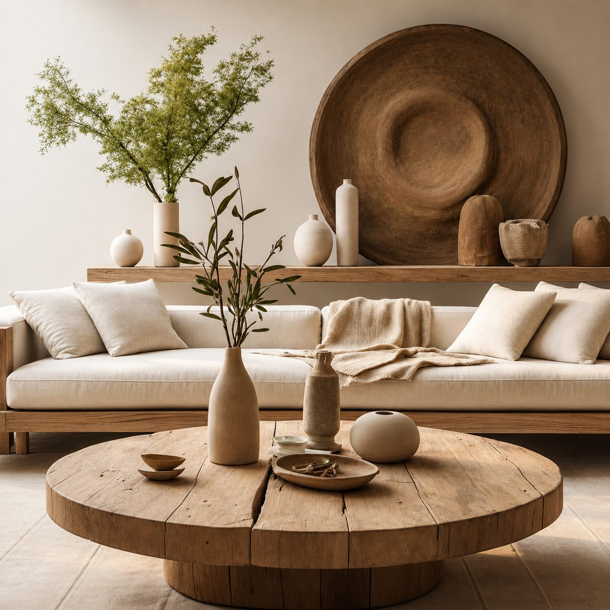
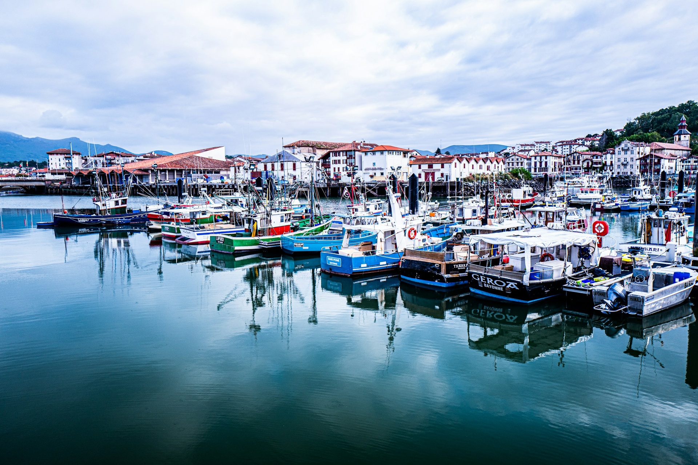
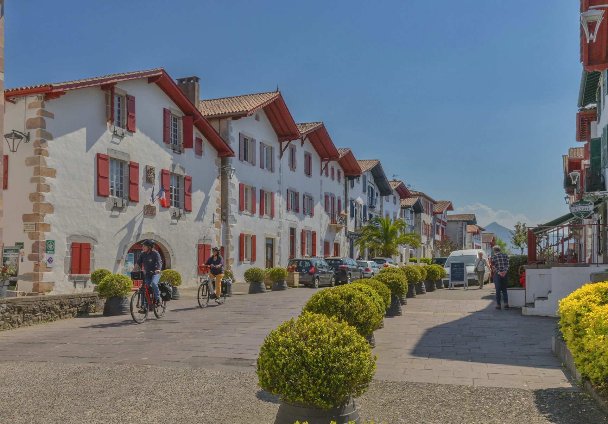
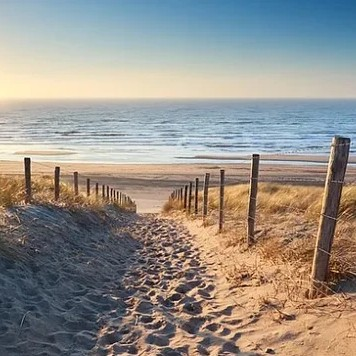
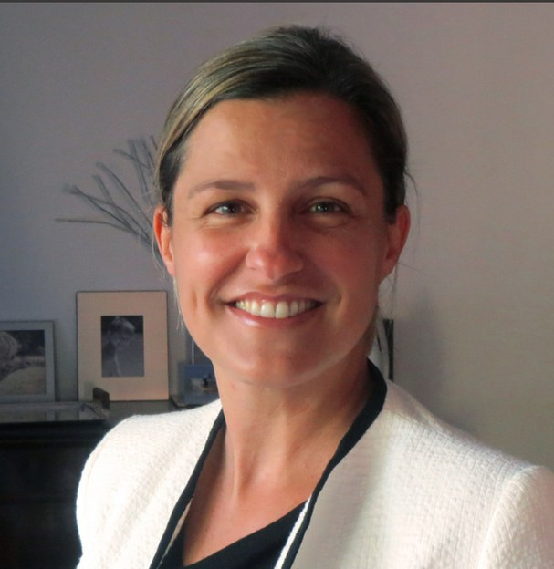
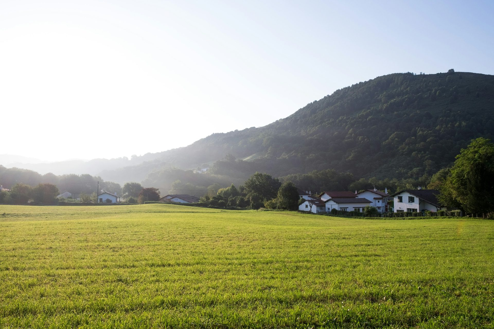

Intendance de résidences secondaires — Pays basque & Landes Second-home management — Basque Country & Landes
L'art de l'intendance exclusive The art of exclusive property management
Pays basque & LandesBasque Country & Landes
Votre sérénité aujourd'hui, votre bien préservé demain Your peace of mind today, your home protected tomorrow
Vous possédez une résidence secondaire.Une interlocutrice unique, sur place. You own a second home.A single point of contact, on site.
Je vous libère de toute contrainte, et gère les entretiens et imprévus en votre absence. Ainsi, vous profitez pleinement de votre propriété dès votre arrivée. I handle the maintenance and any unforeseen issues while you're away. So you can start enjoying your property as soon as you arrive.
Je travaille avec un réseau d'artisans rigoureusement sélectionnés, et je limite volontairement le nombre de propriétés afin de m'y consacrer pleinement et de préserver le côté exclusif de chaque bien. I work with a network of carefully selected craftsmen, and I intentionally limit the number of properties to devote my full attention to each one, and to keep the offering exclusive.
Un lieu préservéA preserved home
Des solutions concrètesConcrete solutions
Votre tranquillité retrouvéeYour peace of mind, restored
PrestationsServices
Un protocole précis pour chaque bien, un rapport détaillé après chaque visite, et des services ajustés à vos habitudes. A precise protocol for each home, a detailed report after every visit, and services adjusted to your habits.
-
Visites et aérations régulièresRegular visits and airings
Vérification complète du bien, détection des anomalies apparentes, suivi technique.Complete check of the property, detection of visible anomalies, technical follow-up.
-
Gestion des artisansManagement of tradespeople
Coordination et suivi des interventions, avec un réseau rigoureusement sélectionné.Coordination and handling of interventions, with a carefully selected network.
-
Gestion du courrierMail handling
Réception, tri, transmission.Receiving, sorting, forwarding.
-
Préparation avant votre arrivéePre-arrival preparation
Maison prête selon vos habitudes ; fermeture à votre départ.Home ready according to your habits; closing when you leave.
-
Rapports détaillésDetailed reports
Photos et comptes rendus après chaque visite.Pictures and summaries after every visit.
-
Gestion des intervenantsManagement of service providers
Ménage, jardin, piscine, maintenance…Cleaning, gardening, pool, maintenance…
-
Services sur mesureServices on request
Courses, suivi de travaux, et tout ce qui répond à vos besoins et à vos attentes.Shopping, works follow-up, and anything that meets your needs and expectations.
De la côte basque aux LandesFrom the Basque coast to the Landes
Biarritz, Saint-Jean-de-Luz, les villages de l'arrière-pays et les plages landaises : je suis native d'ici, et j'y suis présente toute l'année. Biarritz, Saint-Jean-de-Luz, the villages of the hinterland and the beaches of the Landes: I was born here, and I am here all year round.

Saint-Jean-de-Luz
Villages basquesBasque villages
Landes
Clara
Fondatrice de Maison ClaraFounder of Maison Clara
Native du Pays Basque et forte de 10 ans d'expérience dans la gestion immobilière de prestige, j'ai créé Maison Clara pour accompagner les propriétaires de résidences secondaires avec rigueur, discrétion et réactivité. A Basque native with ten years of experience in luxury property management, I created Maison Clara to assist second-home owners with rigor, discretion and responsiveness.
Souhaitant être votre interlocutrice unique, je limite volontairement le nombre de propriétés afin de pouvoir m'y consacrer pleinement, et de préserver le côté exclusif de chaque bien. Bilingue français-anglais, je m'engage par contrat à la confidentialité. As your single point of contact, I intentionally limit the number of properties to devote my full attention to each one, and to keep the offering exclusive. Bilingual French–English, I am bound by a confidentiality clause.

Les étapes clésHow it works
-
01
Premier rendez-vousFirst meeting
Découverte de vos attentes et visite du bien.Understanding your expectations and visiting the property.
-
02
Devis personnaliséTailored quote
Élaboration d'un devis selon la fréquence et les prestations souhaitées.A quote based on the frequency and the services you wish.
-
03
Protocole maisonHouse protocol
Mise en place d'un suivi continu et sécurisation des accès.Continuous follow-up and secured access arrangements.
« Vérifier, anticiper, résoudre, simplifier. Pour que votre temps ici ne soit que joie et sérénité. » “Verify, anticipate, resolve, simplify. So that your time here is all joy and serenity.”
Contact